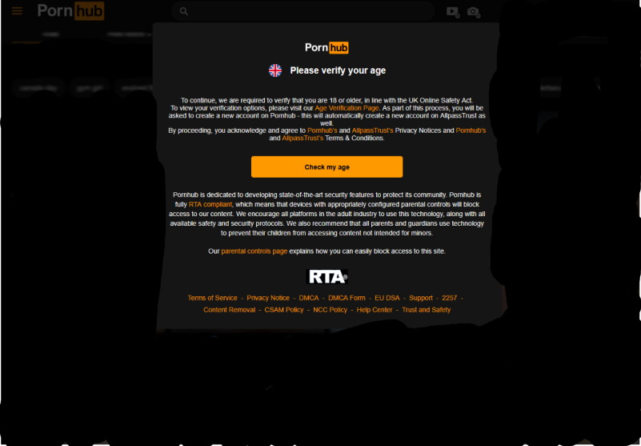

Context
Because of the UK goverment being insane moralfags, Since Friday July 25, porn sites across the UK require age checks for users to access saucy video content. That means they are legally obligated to ask for your ID or even your credit rating upon logging in.

Why this is bullshit
Because these are public and porno sites, fuck knows what they could do with your ID and shit, one of which being selling your data, which is a breach of privacy.
How to Set Up a VPN
Windows
Private Internet Access
- Purchase a Private Internet Access subscription, which is £9.99 monthly or £65.00 for 3 months + 3 years. (ik it's a shit ton of money, but it'll be worth it)
- Install and launch the app
- Log in and connect to a server, make sure it's outside of the fucking UK, Ireland is the preferred server as it is EU. If it doesn't work, try France (also EU), if you can't get it working on any server, contact PIA for help.
- A major pro on PIA is that nothing is logged and you can browse the internet safely.
- Another good VPN service is Mullvad VPN, which is more private and cheaper, only for roughly £4.50
- As same as before, install and launch, make sure it's on an EU country server. Doesn't work, contact Mullvad.
- A con from Mullvad is that you can't torrent on it as it would ruin it's bandwith.
- Free VPNS are also fine, just be careful, some of them are spyware, like Hola VPN. I personally recommend Windscribe, PrivadoVPN or Proton VPN.
Mullvad
Linux
The same, but requires a bit more setup.
- Download the script off PIA's website, then open your terminal and cd into the folder where you put the run file in, usually in Downloads
Private Internet Access
sudo chmod +x pia-linux # Tab to complete
./pia-linux
yay -S private-internet-access-vpn
Mullvad
# Download the Mullvad signing key
sudo curl -fsSLo /usr/share/keyrings/mullvad-keyring.asc https://repository.mullvad.net/deb/mullvad-keyring.asc
# Add the Mullvad repository server to apt
echo "deb [signed-by=/usr/share/keyrings/mullvad-keyring.asc arch=$( dpkg --print-architecture )] https://repository.mullvad.net/deb/stable stable main" | sudo tee /etc/apt/sources.list.d/mullvad.list
# Install the package
sudo apt update
sudo apt install mullvad-vpn
# Fedora 41 and newer
# Add the Mullvad repository server to dnf
sudo dnf config-manager addrepo --from-repofile=https://repository.mullvad.net/rpm/stable/mullvad.repo
# Fedora 40 and earlier
# Add the Mullvad repository server to dnf
sudo dnf config-manager --add-repo https://repository.mullvad.net/rpm/stable/mullvad.repo
# Install the package
sudo dnf install mullvad-vpn
yay -S mullvad-vpn-bin
Android
- Install app from Play Store (e.g., ProtonVPN, Mullvad)
- Open, log in, and connect
iOS
- Download any VPN app recommended here.
- Follow the in-app instructions
Tor Browser
- If you can't afford a VPN, or can't trust a free one, try out Tor Browser, it's free and open source.
Recommended Tools
- Browsers: Firefox, Mullvad Browser
- DNS: NextDNS, AdGuard DNS, DNS0.eu
- Extensions: uBlock Origin, Privacy Badger